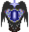
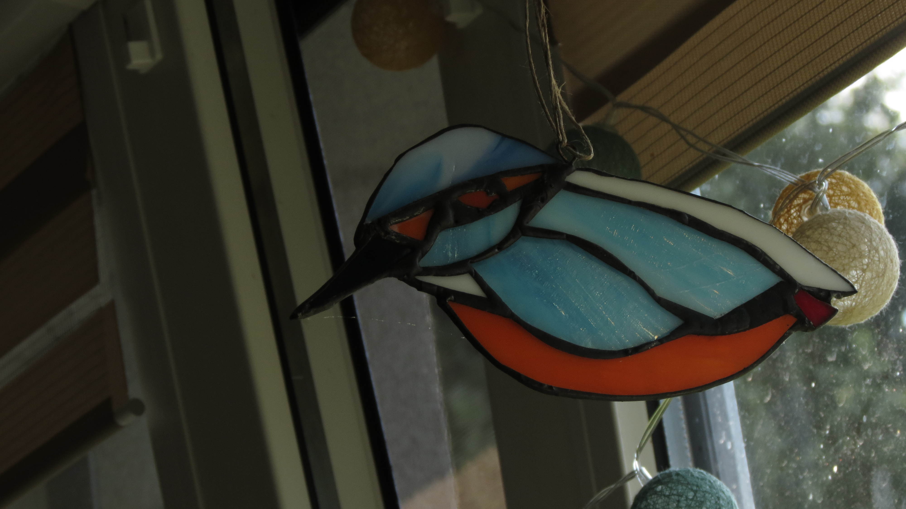

Powrót
*/--------------------------------------------------------------------------------------------------------------------------
Powrót
*/--------------------------------------------------------------------------------------------------------------------------
Fotografia Ziorodka - pierwszy dzien wrzesnia dwatysiacedwdziestegoszostego roku, wieku biezacego

Początkiem Sierpnia za cel postawiłem sobie zaobserwowanie i fotografie zimorodka, ponieważ nigdy wcześniej nie widziałem dzikiego, a jest to bardzo ładny i unikalny ptaszek. Poza tym mam kilka rzeczy w moim pokoju, które noszą jego motyw (m.i.n witraż). Po krótkiej weryfikacji tematu (infomracje na temat występowania i technice fotografii oraz dźwięków jakie wydaje) udałem się do miejsc, w których ptaszek potencjalnie mógłby wystepować. Wszystkie 3 wypady zakończyły się niepowodzeniem, stwierdziłem więc, że poszukam jakiś zgłoszeń zimorodka na inaturalist z nadzieją, że jest coś w okolicy. Były 2 zgłoszenia relatywnie blisko mnie (15-20km). Pierwsze miejsce odwiedziłem w piątkowy wieczór podczas przyjmnej, letniej pogody, okazało się, że są to (wyjątkowo ładne) stawy wędkarskie, które są intenywnie uczęszczane przez głośnych wędkarzy, którzy lubią sobie wypic. To w połączęniu z dniem tygodnia i porą dnia oznaczało sporo głośnych ludzi. Mimo wszystko zostałem tam w nadzieji na zaobserwowanie zimorodka. Po około 1,5h kiedy zrezygnowany, już się zbierałem przyleciał zimorodek, udało mi się zaobserwować, jak poluje, ale na zdjęcia nie było szans. Nigdzie nie usiadł, wszystko działo się w locie i na przestrzeni kilku/kilkunastu sekund.
Kolejnego dnia wybrałem się do drugiej miejscówki. Jak tylko do niej dotarłem wiedziałem, że to jest to. Rzeka oddalona od zabudowań, dróg, widać, że nie uczęszczana z klifami idealnymi do budowy gniazda przez zimorodki. Poza tym kawałek za klifami jest most z przejazdem kolejowym postawionym nad rzeką co tworzy fantastyczną atmosferę (uczucie pociągu przejeżdżającego kilka metrów nad twoją głową jest niesamowite). Po mniejwięcej godzinie zjawił się zimorodek i miałem okazję zrobić pierwszą i jedyną fotografię tego dnia. Niedługo później zaobserwowałem jeszcze polującego zimorodka, ale podobnie jak dzień wcześniej szans na zdjęcie nie było. Do miejscówki wróciłem 2 dni później i tamtego dnia miałem więcej okazji na fotografie, niż się tego spodziewałem, bo aż czterokrotnie ptaki usiadły na różnych gałęziach. Byłem również bliski sfotografowania zimorodka podczas polowania, ale ostatecznie się nie udalo. Co mnie zaskoczyło, to to, że podczs fotografii na (dosłownie) 1.5-2sek przyleciał drugi ptaszek, udało mi się zrobić im zdjęcie z którego jestem naprawdę zadowolony. Poniżej zamieszczam najlepsze zdjęcia jakie zrobiłem w tych dniach, oraz kilka informacji o zimorodkach, których się dowiedziałem podczas czytania o nich.
-Nazwa zimorodek nie pochodzi od rodzącego się w zimie, a od rodzącego się w ziemi. Zimorodki gniazda w których skłądają jaja budują w klifach nad rzekami.
-Zimorodki o dziwo nie są zagrożone a ich populacja jest stabilna (populacje szacuje się n ok.2.5 - 6 tyś par w polsce).
Zawdzięczamy to wprowadzeniu ograniczeń na polowania kiedyś tam, kiedy za martwego zimorodka dostawało się pieniądze (ze względu na ich atrakcyjny wygląd szcególnie często sprzedawane były szkołom) .
Poza tym kiedyś żywy był mit, jakoby zimorodki miały był zagrożeniem dla rybołustwa, co jest dość komiczne.
witraż o którym wspominałem wcześniej


